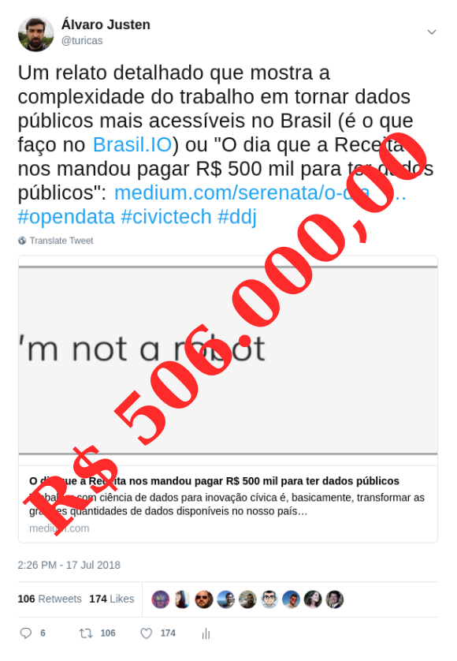

Jornalismo de Dados: Programando a Democracia no Brasil
Turicas aka Álvaro Justen
DevParaná Conference
28 de julho de 2018 - Maringá/PR
$ whoami
Turicas, prazer! =)
Sigam-me os bons:
{twitter,
github,
youtube,
slideshare,
instagram}
/turicas
turicas@brasil.io
bit.ly/turicas-devpr

escoladedados.org

impacto.jor.br
fb.com/curtocafe
Brasil.IO
O Brasil em dados libertos
Software Livre & Python
Desde 2004/2005


“ Democracia é um regime político em que todos os cidadãos elegíveis participam igualmente — diretamente ou através de representantes eleitos — na proposta, no desenvolvimento e na criação de leis, [...]-- Wikipedia
Ela abrange as condições sociais, econômicas e culturais que permitem o exercício livre e igual da autodeterminação política. ”
“ [A CGU] acredita que a transparência é o melhor antídoto contra corrupção, dado que ela é mais um mecanismo indutor de que os gestores públicos ajam com responsabilidade.-- CGU.gov.br
Uma gestão pública transparente permite à sociedade, com informações, colaborar no controle das ações de seus governantes, com intuito de checar se os recursos públicos estão sendo usados como deveriam. ”
“ De acordo com o governo brasileiro, o controle social é a participação da sociedade civil nos processos de planejamento, acompanhamento, monitoramento e avaliação das ações da gestão pública e na execução das políticas e programas públicos. ”-- Wikipedia
Operação Serenata de Amor
#civictech

serenata.ai
Como?
“ Dados abertos são dados que podem ser livremente usados, reutilizados e redistribuídos por qualquer pessoa - sujeitos, no máximo, à exigência de atribuição da fonte e compartilhamento pelas mesmas regras. ”-- OpenData Handbook (definição de Open Definition)
Mais detalhes:
Err... aberto?
twitter.com/turicas/status/1019272233095745537
Jornalismo Investigativo
+
Jornalismo de Dados
generonumero.media
(em conjunto com Natália Mazotte)

Veja a Edição "Mulheres na Política"

Veja a Edição "Mulheres na Política II"

Veja a Edição "Espaço Público"
Rua: substantivo (ainda) masculino

youtu.be/7yQ8U2tFFq4

apublica.org
(em conjunto com Adriano Belisário)

Acesse a matéria
correio24horas.com.br
(em conjunto com Juan Torres)

Acesse a matéria
theintercept.com/brasil
(em conjunto com Adriano Belisário)

Acesse a matéria

Acesse a matéria

Acesse a matéria
Acesse a matéria
Jornalistas estão chegando!
Curso Gratuito (3.000+ alunos)


pythonic.cafe
youtube.com/c/PythonicCafe

Acesse a matéria

xkcd.com/353
Data Pipeline

schoolofdata.org/methodology
Problema: Acessibilidade
Maior parte do tempo dos projetos de análise de dados:

Trabalhando com Dados Públicos


github/turicas/rows
rows convert arquivo.pdf arquivo.csv

Só código não resolve
“ Restringir acesso a dados públicos é elitizar a democracia. ”-- Manifesto Brasil.IO

twitter.com/turicas/status/943176715672711168

twitter.com/turicas/status/959120200976224262

twitter.com/turicas/status/960678777096425472
Brasil.IO
O Brasil em dados libertos
Demonstração
meetup.com/Cerveja-com-Dados
São Paulo, Rio de Janeiro, Curitiba, Salvador... Maringá?
30/07 às 19h em Curitiba (Hop n' Roll)

coda.escoladedados.org
2018.pythonbrasil.org.br